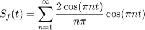
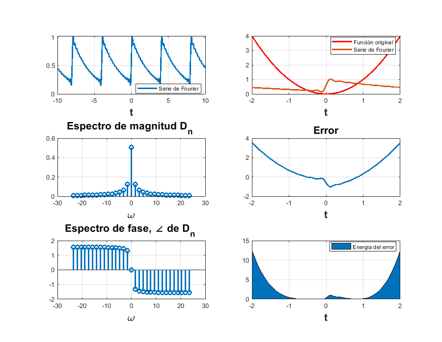

Practica 5 :Series de Fourier en Tiempo Continuo
Contents
Integrantes:
*Alejandro Enrique Lopez Ahumada
*Alvaro Catalán Escobar
*Carlos Enrique Mejía López
*Kaleb Villagómez Galván
Objetivos
Realizar Graficas de series de Fourier expoenciales y trigonometricas en tiempo continuo
Manipulacion de instrucciones en MATLAB
Ejemplo 6.2
Se tiene la siguiente funcion : 2*t.*(-1/2<t & t<1/2)+ 2*(1-t).*(1/2<=t & t<3/2)
Calculamos la Serie de Fourier Exponencial Compleja y para eso se utiliza el siguiente codigo para mostrar las graficas correspondientes d0=0.504;
dn=@(n) 0.504/(1+4*n*j);
t0=-0.5;
tf=1.5;
f=@(t) 2*t.*(-1/2<t & t<1/2)+ 2*(1-t).*(1/2<=t & t<3/2) ;
armo=15;
a=-5;
b=6;
% sfc(t0,tf,dn,d0,f,armo,a,b)
Por lo tanto la serie de Fourier Trigonométrica Compacta es :
Ejemplo 6.4
Se tiene la siguiente funcion :

Calculamos la Serie de Fourier Exponencial Compleja y para eso se utiliza el siguiente codigo para mostrar las graficas correspondientes:
d0=0.504;
dn=@(n) 0.504/(1+4*n*j);
p=pi;
t0=-p;
tf=p;
f=@(t) 1*(t>=-p/2&t<=p/2);
armo=15;
a=-15;
b=15;
% sfc(t0,tf,dn,d0,f,armo,a,b)
Por lo tanto la serie de Fourier Exponencial Compleja es :
Por lo tanto la serie de Fourier Trigonométrica compacta es:
PR08
Ejemplo 3.1
Se tiene la siguiente funcion :
Calculamos la Serie de Fourier Exponencial Compleja y para eso se utiliza el siguiente codigo para mostrar las graficas correspondientes:
d0=0.504;
dn=@(n) 0.504/(1+4*n*j);
t0=-1;
tf=1;
f=@(t) t;
armo=15;
a=-5;
b=6;
% sfc(t0,tf,dn,d0,f,armo,a,b)
Por lo tanto la Serie de Fourier Exponencial Compleja es:
Serie de Fourier Trigonometrica Compacta

Ejemplo 3.2
Se tiene la siguiente funcion:
Calculamos la Serie de Fourier Exponencial Compleja y para eso se utiliza el siguiente codigo para mostrar las graficas correspondientes:
d0=0.504;
dn=@(n) 0.504/(1+4*n*j);
t0=-2;
tf=2;
f=@(t) t.^2;
armo=15;
a=-10;
b=10;
% sfc(t0,tf,dn,d0,f,armo,a,b)

Por lo tantp la Serie de Fourier Trigonomtrica compacta es :
PR10
Se tiene la siguiente funcion :
para a=2 , se tiene lo siguiente :

Ahora calularemos la Serie de Fourier esponencial compleja de y para eso se utiliza el siguiente codigo para mostrar las graficas correspondientes
d0=0.504;
dn=@(n) 0.504/(1+4*n*j);
t0=-2;
tf=2;
f=@(t) 2*exp(-2*abs(t));
armo=15;
a=-10;
b=10;
% sfc(t0,tf,dn,d0,f,armo,a,b)
Por lo tanto , la serie de fourier Exponencial compleja es: